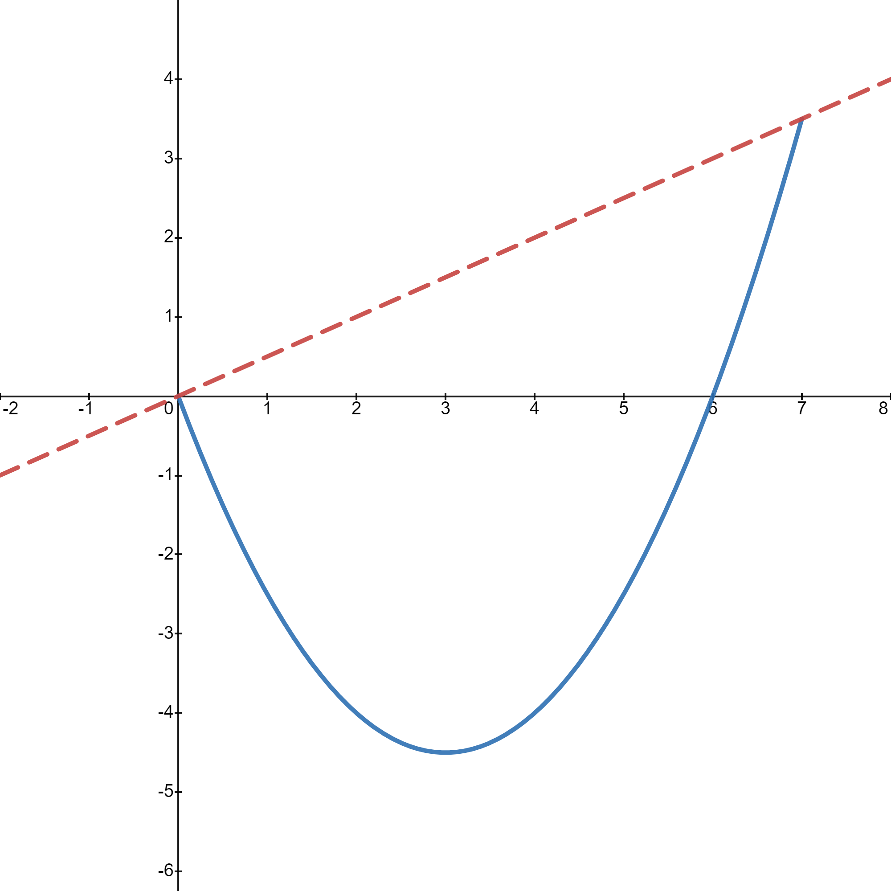
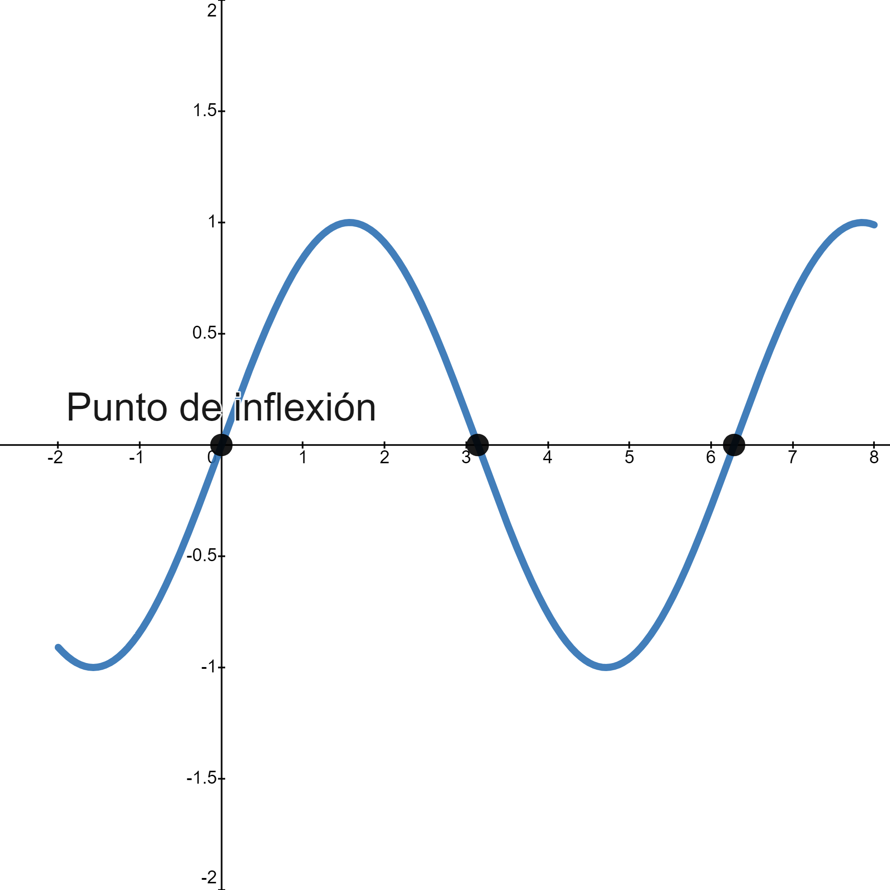
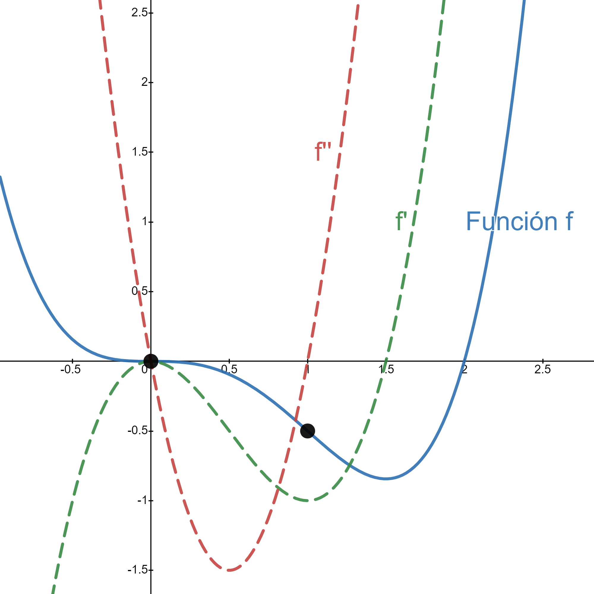

3.5. Convexity and concavity#
3.5.1. Definitions#
Mathematically, the idea of a convex function is simple: it is a function whose secant lines lie above the graph of the function. Said colloquially: it is a glass in which water would not spill.
{kind=link}

If we remember that the secant line to \(f\) through \(a\) and \(b\) has equation \(r(x)=\frac{f(b)-f(a)}{b-a}(x-a)+f(a)\), we obtain the following formal definition:
Definition (Convexity)
We say that \(f\) is convex on \([a,b]\) if
Similarly, we say that \(f\) is concave if the graph lies below the secant line or, equivalently, if \(-f\) is convex.
Definition (Concavity)
We say that \(f\) is concave on \([a,b]\) if \(-f\) is convex on that interval.
The last definition linked to concavity/convexity is the following:
Definition (Inflection point)
We say that \(f\) has an inflection point at \(x_0\) if at that point the function changes from concave to convex or vice versa.
{kind=link}

3.5.2. Convexity and concavity for sufficiently differentiable functions#
A useful reflection leads to an important property: if a function is convex, then its derivative, when it exists, is increasing. Therefore its second derivative, whenever it exists, should be nonnegative. The opposite happens for a concave function.
All this is summarized in the following property:
Property
Let \(f:[a,b]\longrightarrow\mathbb{R}\) be continuous on \([a,b]\) and differentiable on \((a,b)\). Then \(f\) is convex on \([a,b]\) if and only if \(f'\) is increasing on \((a,b)\). This is equivalent to \(f''\geq 0\), whenever the second derivative exists.
Analogously, \(f\) is concave on \([a,b]\) if and only if \(f'\) is decreasing on \((a,b)\) (that is, if and only if \(f''\leq 0\), whenever the second derivative exists).
We illustrate this property in the following figure:
{kind=link}

3.5.3. More information#
On this web page you can see more explanations and some examples (both solved and proposed): https://www.funciones.xyz/concavidad-y-convexidad-de-una-funcion-curvatura/
In the wiki they start with simple ideas, but move toward more abstract concepts. Still, you can take a look: https://es.wikipedia.org/wiki/Función_convexa